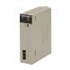
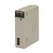
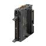

Building Automation
Industrial Automation
Power Automation & Safety


Bangladesh Distributor
Inverters
OMRON Inverters support energy-saving operation of facilities and machines with fine speed control. Models with DeviceNet communications are also provided. Concerning Frequency Inverters, OMRON offers different products in different areas. So please click on the banner "Products links" in the top right corner to reach the country website nearest you.
| Overview | Features |
| Principles | Classifications |
| Engineering Data | Further Information |
Related Contents
- Inverters
Motor Capacity Selection
Before selecting an invertor, first the motor should be chosen.In selecting the motor, first calculate the load inertia for the applications, and then calculate the required capacity and torque.
■Make a simple selection (use Formulas for the required output power)
This method of calculation helps select a motor by calculating the output (W) required by the motor to maintain its regular rotations. It does not include calculation of the effect of acceleration//deceleration. Therefore, make allowance for the calculated value to select a motor. This calculation method can be applied to applications that operate constantly such as fans, conveyers, agitators etc.
This calculation method must not be applied to the following applications:
Those requiring instant start-up.
Those that frequently repeat operation and stop.
Those that have a large inertia at the power transfer part.
Those that have an inefficient power transfer part.
For Straight-Line Operation: Normal Power Po [kW]
For Rotating Operation: Normal Power Po [kW]
■Detailed Selection Method (R.M.S Algorithm)
This method helps to select a motor by calculating the effective torque and maximum torque required to achieve a certain pattern of operation for the application. It selects a motor that is optimal for a particular operation pattern.
Calculate Motor Shaft Conversion Torque and Effective Torque
Calculate the acceleration torque from the load torque calculated from both the motor shaft conversion value and the motor rotor inertia. Then Combine this acceleration torque and the load torque calculated from the friction force and the external force that are applied to the load. Now you get the required torque to operate a motor.
Acceleration Torque
Calculation of Total Torque and Effective Torque
Maximum Torque: TMAX = T1 = TA + TL
*Please make use of the Servo Motor selection software, which can calculate the motor shaft conversion inertia and effective/maximum torque, as above.
Motor Selection
Use the formula below to calculate the motor capacity from the effective torque and the maximum torque that were obtained above.
Select the larger of the two generated values as the motor capacity.
Select a motor the capacity of which is larger than the calculated value and makes allowance for an error.
Motor Capacity corresponding to Effective Torque
Motor Capacity [kW] = 1.048·N·TRMS·10-4
N: Maximum Rotations (r/min)
Motor Capacity capable of Providing Maximum Torque
Motor Capacity [kW] = 1.048·N·TMAX·10-4/1.5
N: Maximum Rotations (r/min)
[[Inverter Capacity Selection]]
Select an inverter that can be used for the selected motor in the process of "Motor Selection".
Generally, select an inverter which fits the maximum applicable motor capacity of the selected motor.
After selecting an inverter, check if it meets with all of the following conditions. If it does not, select an inverter that has a one class larger capacity and check the feasibility again.
Motor Rated Current ≤ Inverter Rated Output Current Maximum Time of Continuous Torque Output Time in an Application ≤ 1 minute
*Where the inverter overload capacity is "120% of Rated Output Current for 1 minute", check it for 0.8 minute.
*Where a 0 Hz sensor-less vector control is being used, or where torque must be maintained for 0 (r/min) rotation speed and where 150% of the rated torque is frequently required, use an invertor which is one rank larger than the one selected by the above method.
[[Outline of Braking Resistor Selection]]
■Importance of Braking Resistor
If the regenerative energy generated in deceleration or descent in an application is too great, the main circuit of an inverter may have an increased voltage and it may be damaged.
Because the inverter usually contains the overvoltage LAD stop function, it is not actually damaged. However, the motor stops detecting an error, making a stable and continuous operation disabled. Therefore, you must discharge the regenerative energy outside of the inverter.
What is Regenerative Energy?
A load connected to a motor has kinetic energy when rotating, and potential energy when it is located in a high position. When the motor decelerates, or when the load descends, the energy is returned to an inverter. It is known as regeneration, and the energy generated by the phenomenon is known as regenerative energy.
Preventing Breaking Resistence
The following are methods to prevent the connection of braking resistance.
These methods will make the deceleration time increase, so check if it will not cause problems.
Enable the deceleration stall prevention (enabled in factory settings) (It will automatically increase deceleration time not to cause an overvoltage to stop the motor).
Set a longer deceleration time. (Cause the regenerative energy to decrease per unit of time.)
Disable Free-Run. (Prevent the regenerative energy from returning to an inverter.)
■Make a Simple Selection for Braking Resistors
It can be a simple selecting method by using the ratio of time in which regenerative energy is produced in a normal operating pattern.
Calculate the usage ratio from the following operating pattern.
Usage Rate = t/T × 100 (% ED)
t: Deceleration Time (Regenerative Time)
T: Single Cycle Operation Time
■Make a Simple Selection of Braking Resistor
When the usage ratio for the braking resistor selected on the previous page exceeds 10% ED, or when an extremely large braking torque is required, use the method below to calculate a regenerative energy and make your selection.
Calculation of Required Braking Resistor
V: 200V class inverter 385 [V]
400V class inverter 760 [V]
T: Maximum Braking Torque [N·m]
Tm: Motor Rated Torque [N·m]
N: Maximum Rotation Speed [r/min]
*Calculate a braking torque using the above "Motor Capacity Selection".
Calculation of Average Regenerative Energy
Regenerative Energy is produced when the motor rotation direction and the torque direction are opposite.
Use the following formula to calculate a regenerative energy per cycle interval.
*Forward rotation direction is Forward for the speed, and the torque in the Forward rotation direction is Forward for the torque.
*Calculate a braking torque using the above "Motor Capacity Selection".
Motor Selection
Select a Braking Resistor from the required braking resistance and average regenerative energy on the left.
Required Braking Resistence ≥ Resistence of Braking Resistor ≥ Minimum Connection Resistence of Invertor or Regenerative Braking Unit
Average Regenerative Energy ≤ Permissible Power for Braking Resister
*If a resistance that has a less then the minimum connectable value is connected on an inverter or regenerative braking resistor unit, the internal breaking transistor can be damaged. When the required braking resistance is less than the minimum connectable resistance, change the inverter or regenerative energy braking to the one having a larger capacity and a minimum connection resistance less than the required braking resistance.
*Two or more regenerative braking units can be operated in parallel. Refer to the following formula to know the braking resistance value in such a case.
braking Resistence(Ω) = (Required braking Resistance as calculated above) × (No. of Units in use)
*Do not use the above formula to select a generative braking resistance value. 150W does not reflect a permissible power capacity, but the maximum rated power per unit of resistance. The actual permissible power varies according to a resistance.
Recommended Products
 CS1W-NC[]71
CS1W-NC[]71
Decrease TCO with Simple Operation, Reduced Wiring, Batch Settings, and Batch Management
CJ2
Introducing the Flagship CJ2 CPU Units, with Built-in Multifunctional Ethernet Port.
CJ2M-MD21[]
Pulse I/O Modules expand the applicable positioning applications. Easily execute the position control of up to four axes.